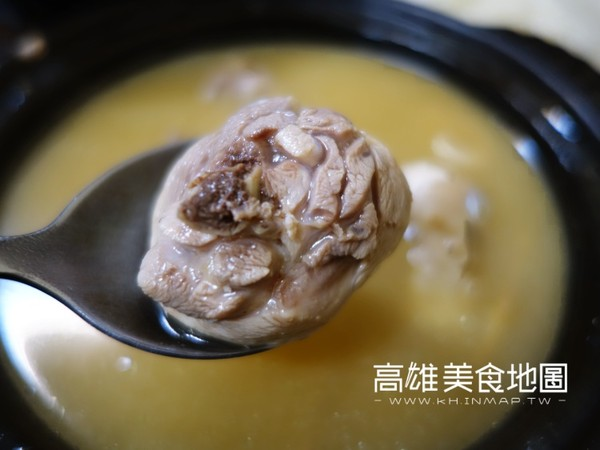

每到邁入冬天之際，高雄氣溫還是赤焰焰熱起來還是會流汗，
路上行人依舊短衣短褲在行走，但偶爾來個寒流，紛紛穿起羽絨外套，總想應景吃個溫補的雞湯暖暖胃。
簡單的麻油、薑片配上鮮嫩雞肉「麻油雞」是許多人冬天進補的好選項，今天要介紹的是不用在乎一大鍋雞湯喝不完，
下班只想一個人速戰速決吃頓飯，即使一個人也能輕鬆點餐的麻油雞，除了知名麻油雞老店外，
近年高雄吹起了個人土雞鍋，讓許多喜歡吃雞湯的人很開心，不但店家選擇變多了，
現點現煮的Q彈鮮嫩的雞肉搭上新鮮雞湯滋味更讓人允指回味，搭配麻油雞的主食。
第一推薦是現拌麵線，現煮麵線趁熱拌上蔥花或蔥油酥，再淋上一匙麻油雞湯增添香氣讓口感更滑順，
部分店家還推出特色主食，雞油拌飯、燒肉飯或虎掌飯讓消費者有更多樣的選擇。對了，別忘了點上一盤乾米血，
柔軟帶著米香的米血糕，有點黏牙的口感讓人喜愛。
